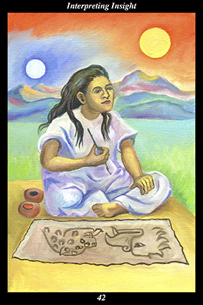

 | IMAGESeated on a reed mat at the edge of the wilderness, a female warrior paints the sun and moon. Using the red and black paint and tree bark paper of the old ones, she depicts the sun as an eagle and the moon as a jaguar.
|
INTERPRETATION
The woven mat symbolizes the old ones’ way of life, for they were born on the mat and took their meals on the mat and slept on the mat and were married on the mat and conceived their children on the mat and were buried in the mat. The female warrior symbolizes the feminine creative force, who conceives in order to nurture and sustain what is valuable. That she sits at the edge of the wilderness means that you set aside time, apart from other people and the routines of everyday life, to both discover and give form to your own personal vision. The sun and moon symbolize the primordial halves of the universal duality, whose opposing halves complement one another in order to unite in a greater whole. Both the red and black paint and the paper made from tree bark are symbols of the old ones’ wisdom and artistry. That she depicts the sun as an eagle and the moon as a jaguar means that you give new form to old meanings, thereby rooting your vision in the old ones’ vision even as you keep theirs alive through your own. Taken together, these symbols mean that you find your own way to give voice to the timeless longings of unchanging human nature.
ACTION
The feminine half of the spirit warrior searches for the unforeseen relationships between things. It is a time for looking closely at the course of change and determining how it threatens the ideals of freedom and justice and equality: if those who can see through obfuscation and misdirection do not act in a timely manner to preserve the valuable, after all, then who will seize the opportunity to prevent wider suffering? Of especial concern is any tendency toward accepting authoritarianism, since it would signal that those using fear to dominate others were close to achieving victory. Because you possess the insight to penetrate the fog of words surrounding ulterior motives, it falls to you to express your vision of truth and illusion in a manner that draws allies together in the battle against the abuse of power. Because you possess the insight to penetrate the fog of rationalizations surrounding greed and ambition, it falls to you to give new form to the ancient symbols of the spirit of the living duality in a manner that draws allies together in the battle against the glorification of materialism. Just as our study of nature draws ever subtler lessons from the hidden relationships we uncover, the study of human nature shows how we can apply those lessons to mastering the tides of cooperation and competition forever ebbing and flowing between people. Because you incorporate the ancient into your endeavor to preserve the worthwhile, the forms you use to express your vision resonate with others’ visions and influence the orientation and timing of their own endeavors. Because you incorporate the ancient way of life into your own, you succeed by alternating the intent of your actions between change and stability, between daring and caution, in accord with your surroundings.
INTENT
Insight comes from experiencing surprising relationships between things. Interpretation comes from creating surprising relationships between things. If we experience the sun radiating light like spirit and the moon reflecting light like the senses, then equating the eagle with the sun and the jaguar with the moon may be said to mean that spirit is that which sees far in light and the senses are that which see far in darkness: if we further experience the sun and moon as two halves of a single creative force revealing itself in the cyclic alternation of day and night, then equating the eagle with spirit and the jaguar with the senses may be said to mean that the spirit warrior is whole and complete when one eye sees far into the world of light and the other eye sees far into the world of darkness. By keeping alive the dynamic tension inherent to the universal duality, we unite our masculine and feminine halves, thereby continuing this wondrous creation born from the ecstatic union of the great father and great mother.
SUMMARY
Whether expressing your love for nature, humanity, or the divine, you reflect a truth that shines beneath the blinding surface of appearances. Take care to be fooled neither by your opponents nor your allies. Question your willingness to believe others, continue pushing yourself to experience things firsthand. Use the element of surprise to call people’s attention to your endeavor.
THE LINE CHANGES
1° This is not a good time to make a move—your resources are not yet sufficient to see you all the way through to the end. Avoid making decisions based on others’ vision of trends. Wait until you feel yourself pulled in the direction of your long-held passions and values.
2° Others around you grow impatient—they find fault with you and try to persuade you to go along with them. Some stay, some leave, and some come back—take none of this personally, for they are acting out their own inner conflicts. Be reassuring but do not try to persuade anyone of anything.
3° You decide to go ahead despite advice and warnings to the contrary. In the face of bad odds, you believe you can prevail—go ahead if you must but try to improve your chances of success by using the utmost precaution, foresight, flexibility, and mobility. You cannot be too prepared.
4° Trying to please others, you put yourself at risk—trying to direct events, you create danger for yourself. The very fact that there are no hard and fast rules in life means that you must forge your own and live by them. Do not depart from your established priorities.
5° You have made an island of calm where you can ride out this storm of turbulent times. Stay put, making yourself available to those close to you—collude with no one but offer advice to those who come seeking it. You are not expendable and so are not in danger of losing your position.
6° The difficulty seems inescapable—you have run out of options and have every reason to fear the worst. Keep your motives pure and your conduct beyond reproach—assistance will arrive in time to avoid disaster. Maintain your faith and outlook—others will adopt your vision as their own.